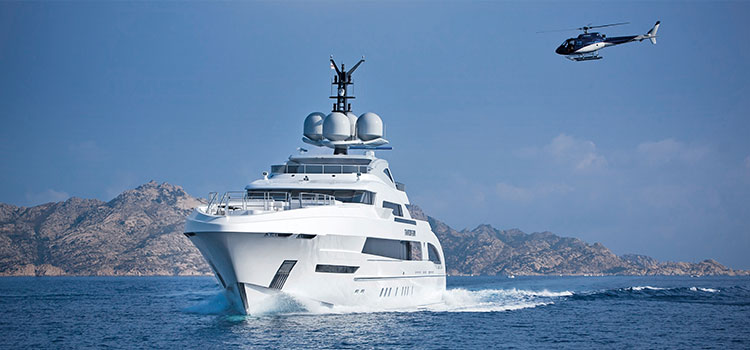

当今，MTU在船用发动机领域已占有一席之地。无论是数以万计的商船，还是高端奢华的游艇，甚至是要求严苛的国防用船，MTU发动机都能提供定制化的完美支持。这些发动机无论是用于主驱动系统或辅助驱动系统方面，还是作为船上供电系统提供电力，皆性能可靠而高效。根据各应用的不同要求，MTU还提供完全匹配的自动化系统，使发动机与船舶完美结合，实现最佳性能。

船用

当今，MTU在船用发动机领域已占有一席之地。无论是数以万计的商船，还是高端奢华的游艇，甚至是要求严苛的国防用船，MTU发动机都能提供定制化的完美支持。这些发动机无论是用于主驱动系统或辅助驱动系统方面，还是作为船上供电系统提供电力，皆性能可靠而高效。根据各应用的不同要求，MTU还提供完全匹配的自动化系统，使发动机与船舶完美结合，实现最佳性能。